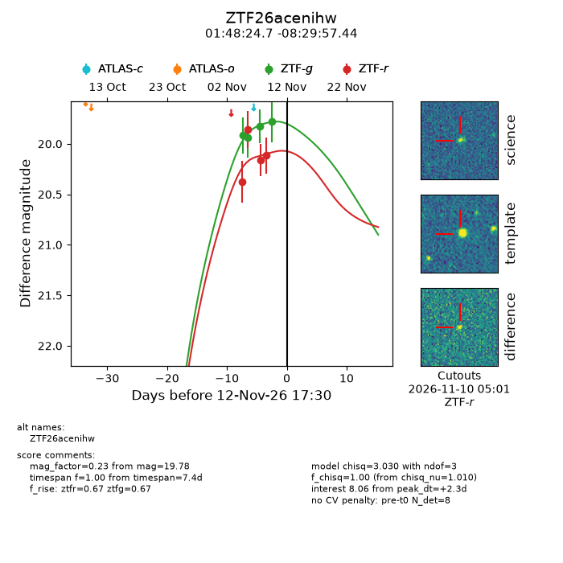
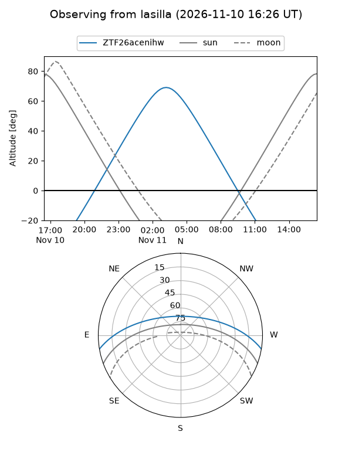
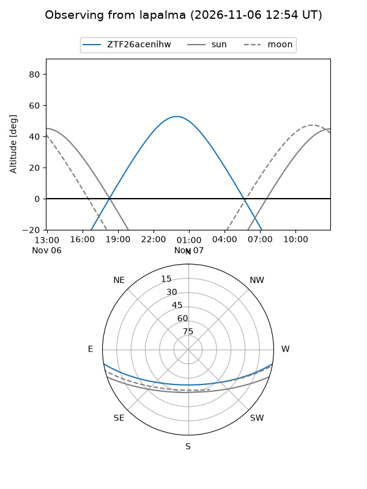
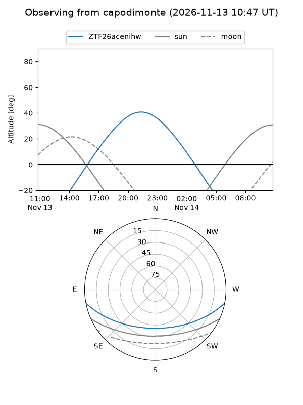
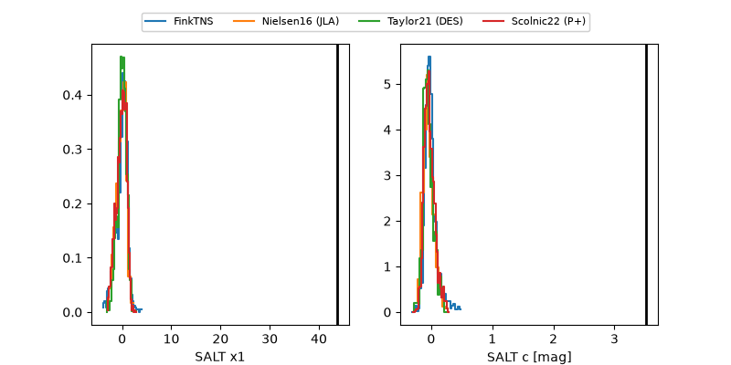

ZTF26acenihw
Target ZTF26acenihw at 2026-11-12 17:35
Aliases and brokers:
FINK-ZTF: ztf.fink-portal.org/ZTF26acenihw
Lasair-ZTF: lasair-ztf.lsst.ac.uk/objects/ZTF26acenihw
ALeRCE-ZTF: alerce.online/object/ZTF26acenihw
Direct TNS query: direct search
alt names
ZTF26acenihw (ztf,fink_ztf)
Coordinates:
equatorial (ra, dec) = 27.1031,-8.49929
equatorial (HMS+DMS) = 01:48:24.74,-08:29:57.44
galactic (l, b) = (161.4639,-67.00630)
Flags:
peak dt: +2.3
Photometry:
last ztfg=19.78, ztfr=20.12
4 ztfg, 4 ztfr detections
Lightcurve

Visibility



Additional plots
